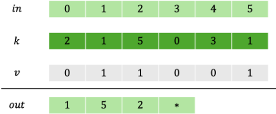
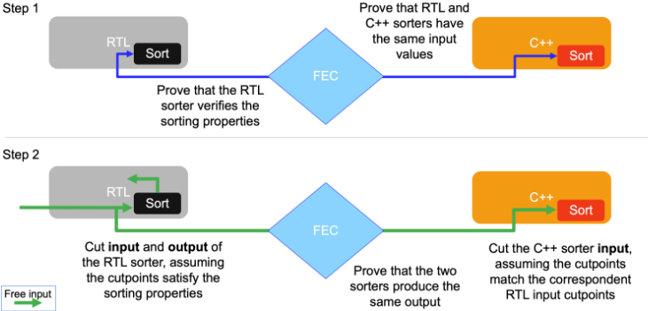

一种面向排序算法的 Formal Equivalence Checking 新方法学
该论文解决的问题是：当排序算法的 C++ 参考模型与 RTL 实现采用不同算法时，两者之间不存在内部等价点（internal equivalence points），传统依赖 assume-guarantee 与 case-splitting 的 Formal Equivalence Checking (FEC) 难以收敛，且在大规模 case-splitting 下运行时间与 license 消耗巨大。作者（NVIDIA）提出一组能唯一刻画排序器输出的抽象属性（validity、ordering、stability、range、uniqueness 等，覆盖 validity mask 与部分排序场景），在 FEC 工具中以 property-based model checking 的方式对 C++ 与 RTL 两侧独立验证，再通过两步证明（先证属性与输入等价，再引入受属性约束的 cutpoints）建立完整功能等价。在工业案例（RTL sorting network 从 12 项中选 4 个最小 valid index，对比 C++ 双重循环模型）中，运行时间从 760 分钟（64 workers、32GB 内存）降至 30 分钟以内（2 workers、4GB 内存），运行时间与资源消耗均减少 96%，且属性收敛时间随输出数量线性扩展。Mutation testing 显示注入的 bug 均在数秒内产生 counterexample，且属性集被验证为充分且必要。该方法不依赖特定工具特性，可扩展到 C-to-C 与 RTL-to-RTL 等价检查。
FEC 是 datapath 组件验证的重要手段，但当 C++ 规格与 RTL 实现采用不同排序算法时，两者不存在内部等价点，无法用传统的等价点分解（assume-guarantee、cutpoints、case-splitting）方法收敛；论文案例中旧方法需对 validity mask 做大规模 case-splitting，产生超过 1600 个子问题，成为回归中最耗时的测试之一，且对未来更大输入规模的可扩展性存在担忧。
定义一组抽象属性（validity、ordering、stability、range、uniqueness），从数学上唯一刻画带 validity mask、支持部分排序并返回索引数组的排序器输出；将这些属性编码进 FEC 工具后，先对 C++ 与 RTL 两侧独立做属性验证（decoupled analysis，可定位哪一侧对形式工具更难），再在第二步证明中对输出引入受已证属性约束的 cutpoints，从而在无内部等价点的情况下建立两侧功能等价。支持单侧或双侧抽象两种变体，方法不依赖任何工具专有特性，并可推广到 C-to-C 与 RTL-to-RTL 等价检查。
运行时间从 760 分钟降至 30 分钟以内，减少 96%
计算资源降至原来的 4%：由 64 workers（每机 32GB 内存）、3 个 sub-proofs、超过 1600 个 case-splitting 子问题，降为 2 workers（4GB 内存机器）、2 个 proofs
属性收敛时间相对输出值数量呈线性扩展（linear scaling），支持向更大 sorting network 推广
Mutation testing 中注入的 bug（交换比较算符、修改 validity mask 应用、注释核心排序代码行）均在数秒内被 FEC 工具生成 counterexample 发现
迭代剔除任一抽象属性后 FEC 工具均能找到 counterexample，证明属性集对建模该问题既充分又必要
区别于依赖内部等价点的传统 FEC 分解方法（case-splitting、assume-guarantee、cutpoint/black-box 抽象），该方法用一组完备的抽象属性唯一表征排序器输出，实现规格与实现的解耦验证；也区别于已有基于定理证明器的排序验证工作（如基于 Hoare Triple 验证 Java 排序），后者不做等价检查、且只处理直接返回元素排列的排序器而非索引数组输出。此外，decoupled 分析可量化揭示 C++ 与 RTL 两侧各自的验证难度，为验证策略优化提供依据。
相关度级别：high
命中能力域：2.5 形式验证与等效性检查 | 2.4 设计验证方法学
理由：论文直接命中能力域 2.5 的核心技术：C-to-RTL transactional equivalence checking、formal property checking、cutpoint 抽象与等价证明，且来自 NVIDIA GPU Formal Verification Team 的工业实践，方法学成熟度与可迁移性高。团队在 LPDDR/HBM/UCIe 等 IP 的 datapath 中普遍存在仲裁器、调度器、优先级选择、重排序等与排序/选择同类的组合逻辑，其 C++ 性能模型与 RTL 之间的等价 signoff 同样可能面临缺乏内部等价点、case-splitting 爆炸的问题。同时，论文对回归运行时间、license 与计算资源的量化优化，以及通过 decoupled 属性验证定位验证瓶颈的思路，对能力域 2.4 的回归与 debug 方法学有直接借鉴价值。
建议动作：深入精读并做内部分享
Emiliano Morini NVIDIA，美国圣克拉拉
摘要 - 形式等价性验证（FEC）是半导体行业中用于验证数据通路组件的一项重要技术。尽管 FEC 已被有效地应用于众多模块的验证，但缺乏内部等价点的设计（例如排序算法）可能带来重大的验证挑战，且证明技术对于较大规模的实现往往无法高效扩展。本文提出了一种针对排序设计 FEC 的新颖方法，以应对各种可能实现在算法多样性方面所带来的固有挑战。所提出的方法引入了一组全面的抽象性质，这些性质能够唯一地刻画排序算法的输出，从而无需在实现之间具备内部等价点即可实现高效验证。通过一个实际案例研究证明了该方法的有效性：在该案例中，我们的一个设计此前是通过大规模的用例拆分（case-splitting）方法完成验证的。所提出的方法在实现完全收敛的同时，将运行时间缩短了 96%，并且所使用的计算资源和许可证数量也显著减少。
在半导体设计中，针对数据通路（datapath）组件最重要的验证方法之一是形式等价性检查（Formal Equivalence Checking，FEC）。该方法主要依赖商用电子设计自动化（Electronic Design Automation，EDA）工具，这些工具支持硬件描述语言（Hardware Description Language，HDL）实现与 C++ 实现的集成验证 [1], [2], [3]。在工具无法直接收敛的情形下，验证工程师通常采用假设-保证（assume-guarantee）方法，即识别并利用内部等价点来分解验证问题。这一过程首先确立所识别内部信号的等价性，随后将这些关系用作辅助假设，以完成对设计的全面验证。内部等价对的重要性体现在工具中专门设有寻找它们的流程，如 [6] 中所述。
尽管识别内部等价点通常能够提升验证效率，但当这类中间等价点不存在时，该方法便不可行。排序算法正是这一挑战的典型例子：不同的实现可以通过本质上截然不同的计算方式产生相同的输出。对于这类算法，在不同实现之间建立内部等价点从本质上是不可能的。本文提出了一种验证排序算法等价性的新方法，通过对抽象化排序器（sorter）规格的一组全面性质进行形式化定义，从而实现解耦分析。本工作的主要贡献如下：
在单一工具中完成这两个步骤的优势不容低估；即使第一步可以在其他工具（例如定理证明器）中完成，将这些结果移植到 FEC 工具中也需要一个转换步骤，该步骤容易出错，并可能影响整个证明的可靠性（soundness）。
第 II 节将简要介绍 FEC，第 III 节将详细阐述排序算法验证所涉及的复杂性，第 IV 节将给出验证排序算法的新方法。第 V 节通过一个实际案例研究展示了该方法的有效性，最后在第 VI 节对全文进行总结。
形式等价性检查（FEC）使用形式化方法在两个不同的设计实现之间建立数学等价性。鉴于现代设计的复杂性，基于仿真的穷举验证在计算上不可行，这使得形式验证成为实现完整验证的唯一可行途径。FEC 涵盖三大类主要的等价性检查：
本文聚焦于事务级等价性检查，它通常被称为 C 到寄存器传输级（RTL）验证，但并不局限于此。
从同一份需求文档出发独立编写 C++ 代码和 RTL 代码，可显著降低出现关联性缺陷的概率，这使得 C 到 RTL 等价性验证成为项目签核中一种行之有效的验证方法。C 到 RTL 等价性验证对性能分析也很重要，因为 C++ 模型常被用于综合前指标的收集和实验评估。此类分析的可靠性取决于 C++ 规格与 RTL 实现之间的等价性。C++ 模型在验证灵活性方面具有优势，由于其执行速度优于 RTL，因而能够进行大规模仿真。在某些情况下，这些 C++ 模型通过定理证明来验证 [8]；在另一些情况下，则使用定理证明器直接验证 RTL 代码 [9]。
FEC 方法论已被证明在验证基本算术运算方面卓有成效，包括加法、乘法、融合乘加（FMA）[10]、除法 [5] 以及点积 [7]。虽然缺陷检测通常只需极少的人工干预，但通过 FEC 确立不存在缺陷则面临更大的挑战。这就需要借助复杂的验证技术，包括情况拆分、假设-保证推理，以及通过割点和黑盒进行的抽象。例如，在 FMA 验证 (𝑎 ⋅ 𝑏 + 𝑐) 中，一种常见方法是在两个实现中分别识别出表示扩展精度乘积 𝑎 ⋅ 𝑏 的内部信号。验证过程要么建立直接的信号等价性，要么建立在特定条件下成立的等价关系（例如，考虑以进位保存格式表示的信号的加法）。随后，这些信号可以用割点进行抽象，并可引入情况拆分来处理不同的情形，例如规格化数、非规格化数、无穷大和 NaN。
排序操作是数字设计中各类应用的一种基本计算原语。由于在计算相同输出时可能存在固有的算法多样性，验证 RTL 排序实现与其 C++ 对应实现之间的等价性面临重大挑战。两个实现之间缺乏等价的内部点，使得传统的等价性分解方法难以奏效。考虑到 RTL 设计者（功耗、性能和面积）与 C++ 开发者（速度和可复用性）的目标差异，再加上需要保持实现与规格之间的独立性，比较双方很可能使用不同的排序算法来计算结果。
虽然对于小规模排序问题，直接形式化验证可能是可行的，但实际应用通常需要复杂的验证策略。
排序算法的形式化验证此前已有研究涉及。例如，在 [11] 中，作者采用演绎定理证明器验证了一个用 Java 实现的排序算法。他们的方法利用前置条件和后置条件，与 Hoare 三元组的原则相一致。作者为验证建立了高层规格，强调终止性、内存与异常安全性、无溢出以及排序正确性等属性。值得注意的是，他们并未处理等价性检查，而是专注于直接返回输入元素排列的排序器，而非有效索引数组——后者正是下一节所考察的情形。因此，他们所验证的属性与本文所考虑的属性有所不同。
考虑一个涉及两种不同排序实现的 C 到寄存器传输级（RTL）等价性验证问题。输入由 𝑁 个元素组成，索引从 0 到 𝑁-1，其中每个元素 𝑖 具有一个排序键值 𝑘[𝑖]。一个二进制有效性掩码 {𝑣[0], . . . , 𝑣[𝑁 - 1]} 指定了在排序操作中必须考虑哪些元素。设计将有效元素优先于无效元素，并根据键对有效元素进行排序，返回前 𝑛 个输出索引 {𝑜𝑢𝑡[0], . . . , 𝑜𝑢𝑡[𝑛 - 1]}，其中 𝑛 ≤ 𝑁。对于具有相同键的有效元素，索引较低者具有优先权。当 ∑𝑣[𝑖] = 𝑚 < 𝑛 时，值 𝑜𝑢𝑡[𝑚], . . . , 𝑜𝑢𝑡[𝑛 - 1] 为未定义。不失一般性，假设为升序排列；通过对排序键取负，该方法可以轻易地适配降序排列。这一问题的表述不受有效性掩码和值 𝑛 的限制，因而可同时适用于部分排序和全排序场景。

用于抽象此类通用排序器输出的属性在表 I 中进行了描述。
| 0 | 1 |
|---|---|
| Range | Each valid output index is between 0 and 𝑁-1 . |
| Uniqueness | All valid output indices are distinct. |
| Validity | If 𝑚 valid inputs exist ( 0 < 𝑚 ≤ 𝑛 ), outputs 0 to 𝑚-1 are valid. |
| Ordering | Valid outputs are sorted by keys in ascending order. |
| Stability | For equal keys, lower original indices appear first. |
| 0 | 1 |
尽管并非在所有排序应用中都是必需的，稳定性属性确保了当多个有效元素拥有相同键时输出顺序的确定性。虽然本文考虑的是稳定排序，但我们的方法可以扩展到非稳定排序的情形，只需恰当地表述两个实现的输出之间所期望的关系即可。这些抽象属性考虑了 ∑𝑣[𝑖] < 𝑛 的情况。
上文所介绍的任何此类通用排序器都满足表 I 中列出的属性：它对有效元素进行排序，对于相同的键优先考虑索引较低者，因此满足排序性（ordering）和稳定性（stability）。由于返回的有效索引来自输入向量，它们是介于 0 与 𝑁-1 之间的值，并且显然是唯一的，因此范围（range）和唯一性（uniqueness）也得到满足。按照规格说明，它返回 𝑛 个元素，当 𝑚 ≥ 𝑛 时这些元素全部有效，否则仅前 𝑚 个有效。因此，当 𝑚 ≤ 𝑛 时，值 𝑜𝑢𝑡[0], . . . , 𝑜𝑢𝑡[𝑚 - 1] 均为有效，满足有效性（validity）属性的要求。
反之，如果某个设计满足表 I 的属性，那么依据有效性属性，它会优先处理有效元素；依据排序性的定义，它会按照键对这些元素进行排序；依据稳定性属性，当键相同时它会优先考虑索引较低者。所有返回的有效输入都是唯一的，且介于 0 与 𝑁-1 之间，与上述规格完全一致。
表 I 中的抽象属性可以通过不同方式在形式等价性检查（FEC）工具中进行形式化编码。本文所提出的方法对每个条目位置 0 ≤ 𝑖 < 𝑁 采用属性枚举的方式。例如，采用第 III-A 节中引入的记号，对于产生 𝑛 = 2 个输出的排序器，其排序属性可通过以下逻辑约束来表达，∀𝑖 ∈ [0, 𝑁 - 1]：
上述公式之间的区别在于后者中额外的前提条件项。之所以需要这一补充条件，是因为 𝑖 遍历所有可能的元素，因而需要显式排除 𝑖 对应于第一个输出位置（该位置拥有最小键值）的情形。对于更大的 𝑛 值，同样需要类似的项。
稳定性属性可以类似地进行形式化；例如，对于位置 1 的输出，该属性可表达如下，∀𝑖 ∈ [0, 𝑁 - 1]：
其他属性的编码方式类似，为简洁起见在此省略。尽管存在其他编码选项，例如采用经过适当约束的符号整数变量，但这些方法虽然在数学上更为优雅，却可能在属性验证中引入额外的复杂性，因为一个符号变量会同时表示 1 到 𝑁 之间的多个值。这种复杂性可能会影响验证瓶颈的识别，并使调试过程更具挑战性，尤其是在使用那些不提供全面内部细节以辅助分析属性收敛问题的商业工具时。
为说明所提出方法的有效性，我们将其应用于验证一个实现了性能优化排序网络的工业级寄存器传输级（RTL）设计。这类算法多年来已被广泛用于解决类似问题，讨论此类算法的最著名论文之一是 [4]。所考虑的组件从包含十二个条目的数组中计算出四个最小的有效索引。验证任务需要针对其 C++ 参考模型建立形式等价性。C++ 实现采用双重嵌套循环算法，迭代地识别最小有效元素，随后将其标记为无效，再进行下一次迭代。
该案例研究体现了前几节中所描述的挑战，因为这两个实现缺乏可用于问题分解的内部等价点。此外，排序器嵌入在更大的设计中，其接口并非完全匹配，并且需要预处理函数来准备输入数据。虽然这些因素引入了额外的复杂性，但并不妨碍我们方法的应用。
在以往的项目迭代中，该验证是我们回归测试套件中计算量最大的测试之一，需要大量的运行时间、许可证和计算资源。正如预期的那样，验证工具在没有额外引导的情况下未能实现收敛。由于缺乏内部等价点，最初的验证方法对有效性掩码（validity mask）值采用了大规模的情形拆分（case-splitting）。对于每个特定的有效性掩码配置，工具都成功地建立了比较双方之间的等价性。对于有效输入较少的配置，工具可以同时处理多个情形，而更复杂的场景则需要逐个情形进行分析。此外还实现了一种使用数据域缩减的更快的替代证明方法，但它需要额外的手动检查来确认其适用性，因此未进一步采用。当时，发布计划所带来的时间限制使得无法开发替代方法。
尽管最终证明实现了收敛，但关于可扩展性的担忧依然存在，特别是针对未来可能涉及更大输入数组或更多输出值数量的修改。这些考虑促成了这一新方法的开发。
在按照表 I 中的定义完成属性定义之后，进行了一项解耦的验证分析，以评估每种实现的相对复杂度。结果表明，C++ 实现带来了更大的验证挑战，显著的运行时间差异即为佐证。最值得关注的运行时间差异如表 II 所示。时间间隔是指某一特定类型的第一个属性与最后一个属性收敛所需的时间。该实验还表明，属性的收敛时间相对于输出值的数量呈线性扩展。
| Property Type | Convergence Time RTL | Convergence Time C++ |
|---|---|---|
| Validity | 3 sec | 20 - 80 min |
| Ordering | 0 - 20 min | 33 - 100 min |
| Property Type | Convergence Time RTL | Convergence Time C++ |
基于这些发现，实现了一种包含以下步骤的验证方法：

如图 2 所示，该方法通过两个不同的证明来实现。第一个证明建立排序器的排序属性与输入等价性，从而确保后续证明中割点（cutpoint）假设的合理性。第二个证明引入由第一个证明中已证属性所约束的割点，使形式等价性检查（FEC）工具能够证明 C++ 实现产生相同的唯一输出，该输出满足针对 RTL 排序器所证明的抽象属性。这种两步方法建立了 RTL 与 C++ 之间的完全功能等价。
表 III 给出了原始方法与所提出方法之间的定量比较。两种验证方法均在分布式计算环境中执行，该环境的内存分配和用于并行执行证明的工作进程数量均可配置。原始方法需要 760 分钟才收敛，在每台配备 32GB 内存的机器上使用了 64 个工作进程。该方法采用了三个子证明，其中最终的证明对 validity mask 实施了大规模的情况拆分（case-splitting），总共生成了超过 1600 个子问题。相比之下，新方法在 4GB 内存机器上仅使用两个工作进程，便在不到 30 分钟内实现了收敛，且仅生成了图 2 中所述的两个证明。这些结果表明，运行时间减少了 96%，而所需的计算资源仅为原来的 4%。这些改进使得设计修改后能够快速重新验证，而属性收敛时间的线性扩展特性则使该方法能够适用于更大规模的排序网络。
| Methodology | Runtime (min) | Workers | Machines Memory | Number of subproblems |
|---|---|---|---|---|
| Case-splitting (old) | 760 | 64 | 32GB | > 1600 |
| Sorting abstraction (new) | 27 | 2 | 4GB | 2 |
| Methodology | Runtime (min) | Workers | Machines Memory | Number of subproblems |
为了验证该方法在检测违例方面的有效性，采用变异测试（mutation testing）[13] 向设计中系统地注入缺陷。这些缺陷均被 FEC 工具迅速识别，该工具在数秒内生成了相应的反例。所注入缺陷的类型包括更改比较运算符（例如将 '<' 与 ' ≤ ' 互换）、调整 validity mask 的应用方式，以及注释掉核心排序过程中选定的若干代码行。
此外，我们还确认，按照表 I 在我们的设置中定义的属性不仅足以证明等价性，而且是必要的。评估过程通过迭代执行我们证明策略中的步骤 2 来完成，每次排除一个已编码的属性。每一次，FEC 工具都识别出了一个反例，从而证实削减后的属性集合不足以对该问题建模。
本文提出了一种针对排序设计的 FEC 新方法，解决了可能实现方式在算法上的多样性所带来的固有挑战。所提出的方法引入了一组经过系统性推导的抽象属性，用于唯一地表征排序算法的输出，从而实现高效验证，并解决了比较双方之间缺乏内部等价点的问题。该方法相对于传统的情形拆分（case-splitting）方法而言是一项重大进步，并通过一个具有代表性的案例研究得到了验证。传统方法在有效性掩码（validity mask）上进行大规模的情形拆分，需要使用 64 个工作进程，耗时约 12.5 小时才能实现收敛。相比之下，新的基于抽象的方法仅使用两个工作进程即可在 30 分钟内完成验证，运行时间和资源需求均减少了 96%。该方法不仅降低了计算复杂度，还为评估不同算法实现之间验证难度的相对差异提供了有价值的见解。此外，该方法在输出值数量方面表现出线性扩展性，表明其适用于更大规模的排序实现。
本文给出的结果表明，通过在 FEC 框架内进行细致的抽象和基于属性的验证，排序算法的 FEC 可以得到显著改进。未来的工作将扩展基准测试，比较多种 FEC 工具，并对排序算法的不同参数化配置进行验证。还将探索将类似的抽象应用于其他缺乏内部等价点的算法类别，这有望为形式验证实践带来更广泛的改进。为此，可以研究一种基于 AI 的方法，以生成与表 I 中所呈现属性类似的抽象属性。
作者衷心感谢 NVIDIA GPU 形式验证团队的各位成员，他们的鼓励、支持和宝贵建议为本文的完成做出了贡献。